📖 故事 · 设定集分镜
剧情 · 设定集分镜
从开场采冰到真爱解冻：关键序列的原书分镜
F1·F2
主电影
中/英
双语
🎬 开场与加冕

序列 2.0 – 初遇安娜与艾莎
本页为 Sequence 2.0 的分镜网格（数字），由多位故事艺术家合作，完整呈现序幕情节：幼年姐妹在艾莎冰雪魔法中嬉戏、大厅意外、巨魔施法疗伤、国王王后关闭城堡大门、姐妹成长中疏远、以及父母登上注定沉没的船只离港。（F1设定集原页）
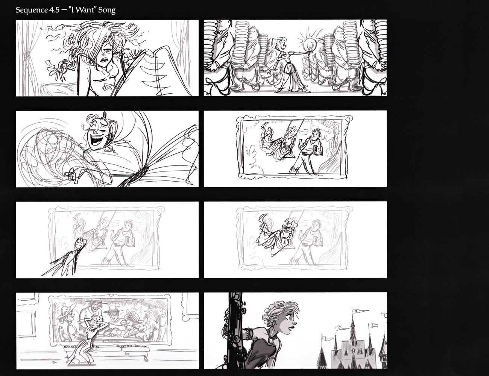
序列 4.5 – "I Want" 歌曲
本页为 Sequence 4.5（"I Want" 歌曲）分镜网格，黑白草图呈现安娜在加冕前夕的经典唱段：顶着乱发醒来、迎接端着盘杯的仆人、兴奋高歌、对着画框想象邂逅俊朗陌生人、并从城堡阳台探身望向阿伦黛尔尖塔。（F1设定集原页）

序列 5.0 – 初遇 Hans
本页为 Sequence 5.0（初遇汉斯）分镜网格，由 Chris Williams 与 John Ripa 绘制：汉斯乘马船抵港、码头相撞、满月船舷同坐、接住坠落的安娜、初次亲密接触。正文延伸讨论 pitch 时的"脆弱感"（Veerasunthorn、Ranjo），以及艺术家推崇以视觉而非对白传情（Ripa、Wi（F1设定集原页）
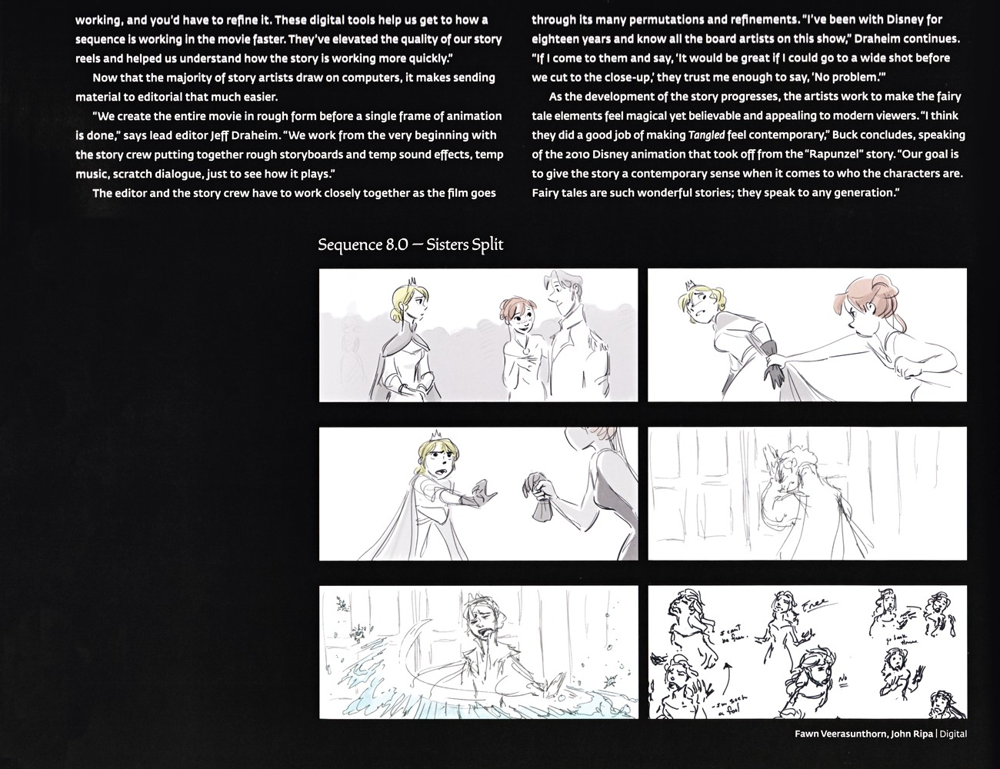
故事工艺续 + 序列 8.0 – 姐妹决裂
本页续谈数字分镜如何加速序列打磨，并以剪辑师 Jeff Draheim 之口说明"在动画开帧前以粗版完整呈现全片"（含临时音效、音乐、对白）。Buck 以《魔发奇缘》为例强调赋予童话当代感。末尾列出 Sequence 8.0 姐妹决裂分镜（Veerasunthorn、Ripa 作）：加冕接待中安娜拉艾莎手臂、艾莎退避生（F1设定集原页）
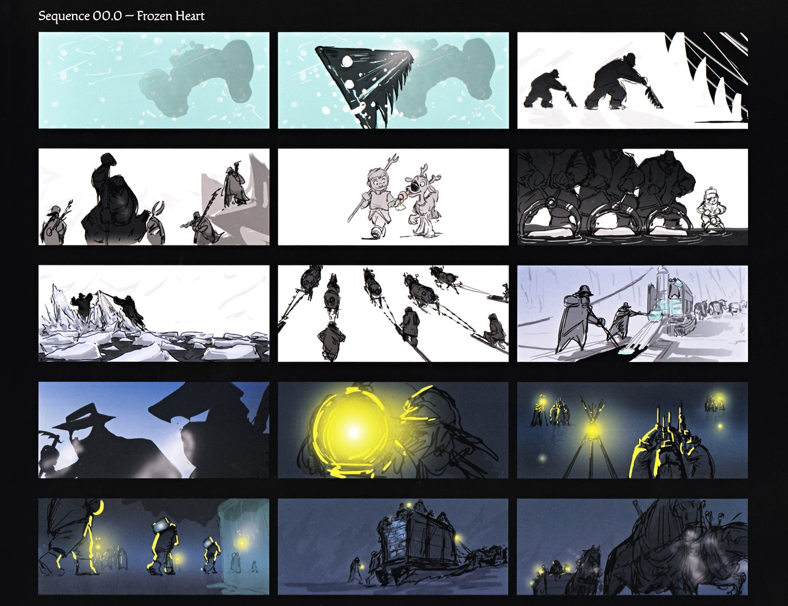
第 00.0 场·冰冻之心（开场采冰）/ Sequence 00.0 – Frozen Heart
分镜表现开场冰匠在雪夜采冰、拉运冰块的劳作场景，以及小 Kristoff 与 Sven、夜晚营地火光等，是开场序列视觉参考。（F1设定集原页）
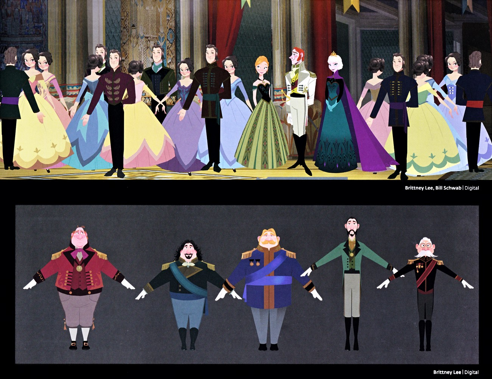
加冕礼场景群像
上图为阿伦黛尔城堡加冕礼场景：高柱、红幔与挂毯的大宴会厅中，艾莎居中（绿黑加冕裙、紫披风、王冠），旁为安娜（浅蓝加冕裙）、汉斯（白/海军蓝军服）、威塞尔顿公爵（白/蓝）；其余宾客着粉、黄、淡紫、青礼服，男士着酒红、海军蓝、绿军服。下图为五位阿伦黛尔官员/军官的军服模型表（酒红、深绿、带绶带蓝、绿、黑红）。（F1设定集原页）
🏔️ 北山路
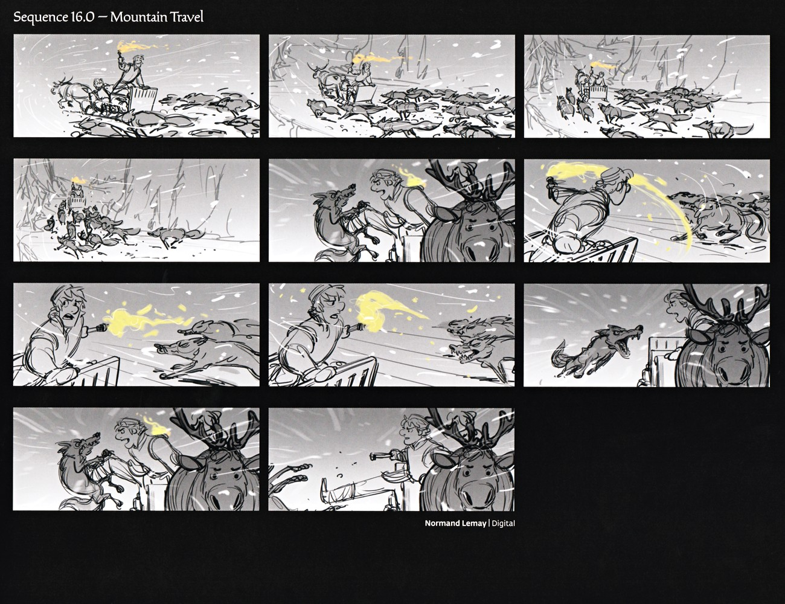
第 16.0 场·雪山跋涉
分镜表现 Kristoff 与 Sven 在雪山中遭遇狼群追击、用火炬驱赶的紧张追逐段落，是动作分镜参考。（F1设定集原页）

第 16.5 场·初遇 Olaf
分镜展示 Olaf 的"诞生/组装"、与众人互动，以及 Olaf 幻想夏天（花丛、海滩、伞下）等幽默桥段，是 Olaf 角色与喜剧节奏参考。（F1设定集原页）
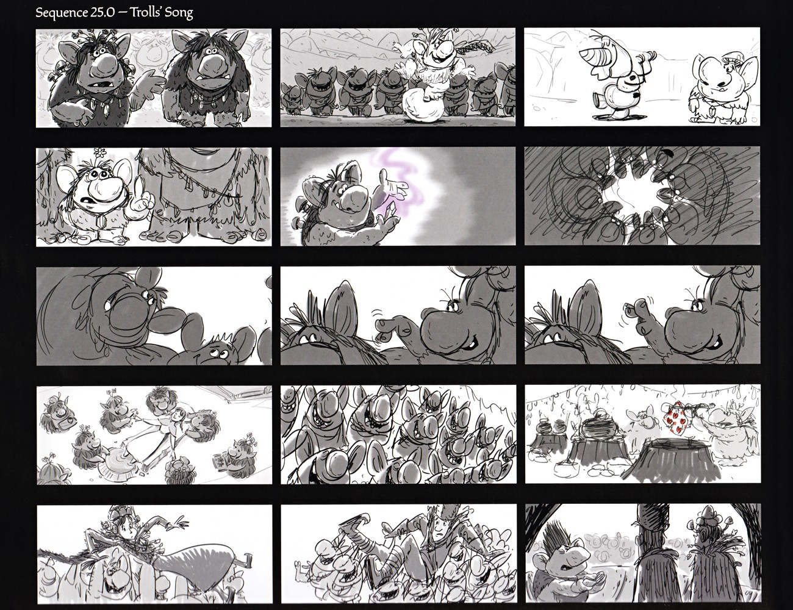
第 25.0 场·巨魔之歌
分镜表现巨魔长老的对话、群魔欢庆舞蹈、以及 Kristoff 与 Anna 在远处观望，是"巨魔之歌"段落节奏参考。（F1设定集原页）
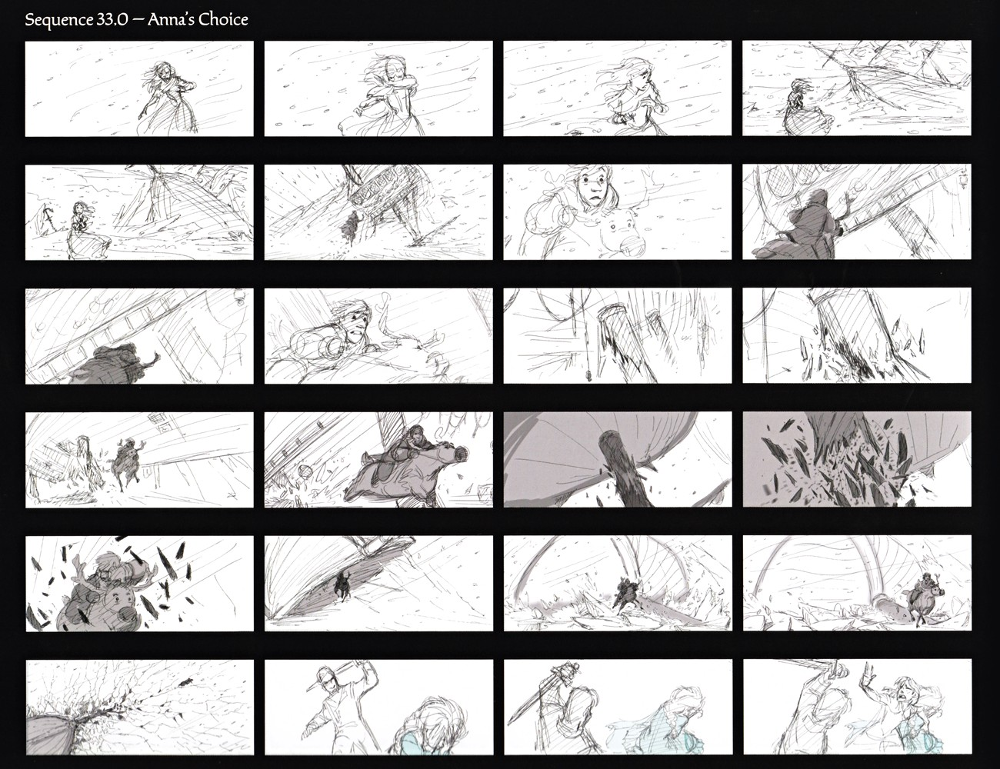
第 33.0 场·Anna 的抉择
分镜表现 Anna 在雪地绝望奔跑、船上与风浪搏斗、以及最终面对持剑的 Hans 的生死抉择，是高潮前动作段落参考。（F1设定集原页）
💔 高潮与结局
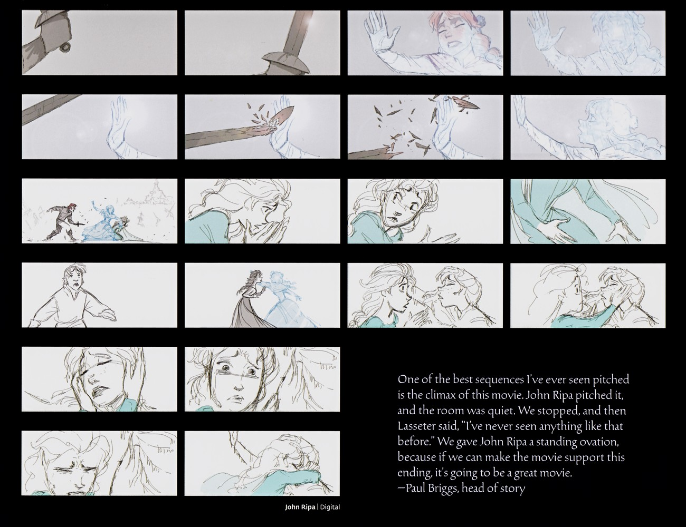
高潮故事板续
分镜展示高潮——Hans 的剑击碎 Anna 冰封的手、Elsa 悲恸、姐妹相拥中 Anna 解冻。Paul Briggs 回忆 John Ripa 讲述此段时全场静默、Lasseter 起立鼓掌。（F1设定集原页）

Elsa 与 Anna 对峙及姐妹表演
本页围绕姐妹对峙与互动：Claire Keane 的炭笔/粉彩稿描绘高大阴森、深袍乱蓝发的 Elsa 与娇小认真、绿裙的 Anna 紧张对峙；动画总监 Hyrum Osmond 戏称自己"从我姐妹们所有的吵架里汲取灵感"。Bill Schwab 另绘 Elsa 居高施放冰/光束、地上防御姿态 Anna 的铅笔稿。绑定主（F1设定集原页）
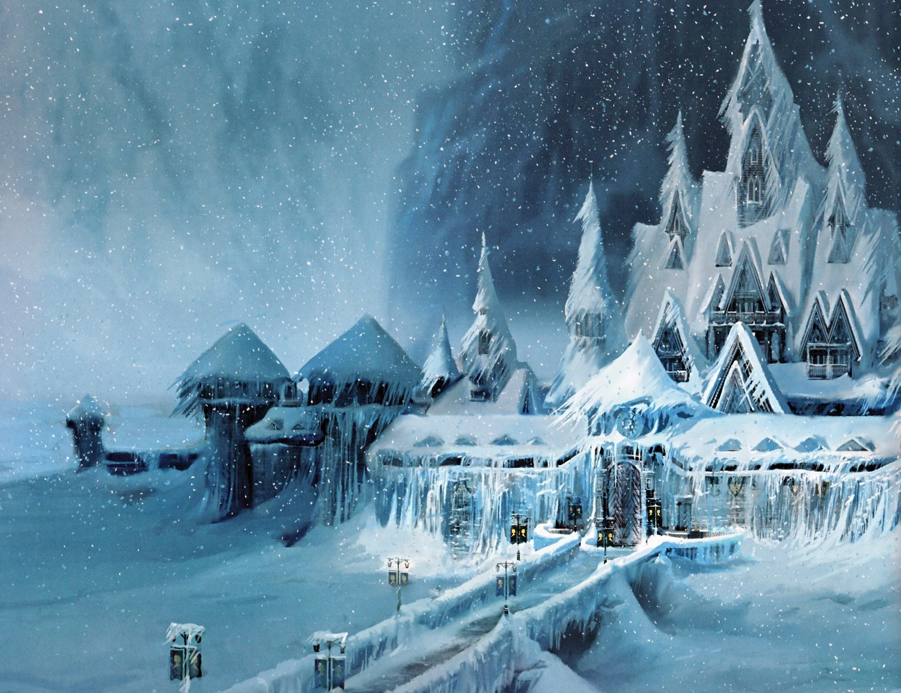
阿伦黛尔被冰雪封冻夜景
本页为纯图页：俯瞰阿伦黛尔城堡与城镇在 Elsa 魔法下整体封冻于冰雪之中，大雪遮蔽远处峡湾与群山。画面以冷蓝夜色与密集雪幕营造肃杀而壮丽的封城氛围，是环境设定与色彩基调的关键参考。（F1设定集原页）
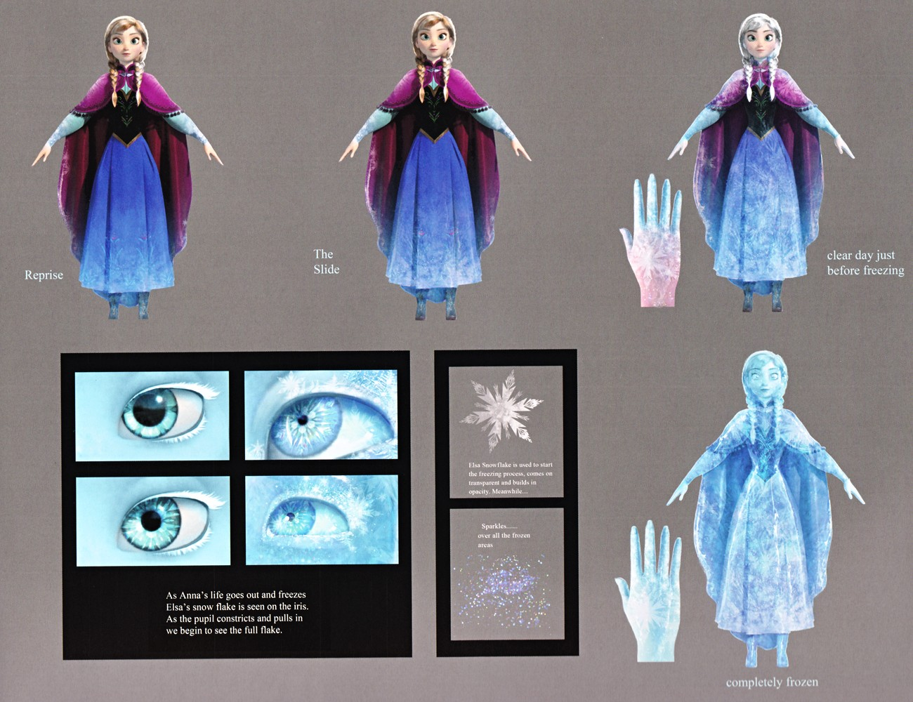
安娜冰封过程特写
本页记录安娜冰封的视觉演化：左侧三幅图按 "Reprise"（重唱段）、"The Slide"（滑落段）、"clear day just before freezing"（冰封前晴朗日）标注，皮肤与衣物逐级化为冰。中部四张眼睛特写展示雪花纹路在虹膜上蔓延、瞳孔收缩，并借由艾莎的雪花显现于虹膜来表现生命流逝。右侧参考面板（F1设定集原页）
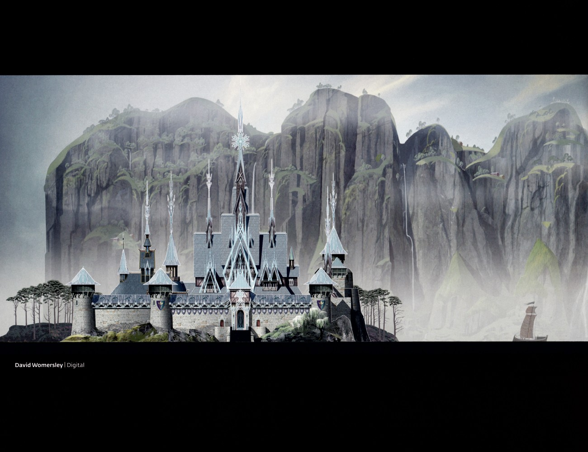
阿伦黛尔城堡夏日复原概念图
画面以白天宽景呈现解咒后的阿伦黛尔：城堡背倚葱郁悬崖与瀑布，前方是波光明亮的峡湾，整体由冰雪的冷蓝转为夏日的绿意与暖光，标志故事的和解与重生结局。由 David Womersley 以数字绘画完成。（F1设定集原页）

Water 章节内（Into the Unknown 序列 storyboard）
"INTO THE UNKNOWN" 标题。整个序列故事板展示：Elsa 在城堡/王宫场景疑惑倾听→走入未知→森林中迷失方向→遇到驯鹿→落水。署名 Normand Lemay。（F2设定集原页）
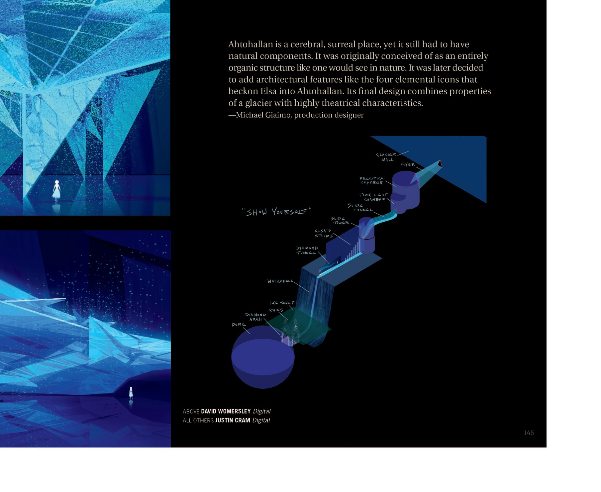
Ahtohallan 章节内（"Show Yourself" 序列结构）
Michael Giaimo（制作设计师）解释：阿塔霍兰是超现实之地，但仍需自然元素；最初构想完全自然有机的结构，后加入建筑特征如"四元素图标"召唤 Elsa 进入；最终设计结合冰川质感与高度戏剧性。手绘图显示 Elsa 之旅从 DOME 顶端的 CHURCH WALL 一路下行经过多个标志性空间。（F2设定集原页）
💡 图注说明
本页全部图版来自《The Art of Frozen》与《The Art of Frozen II》官方设定集原书扫描，图注经原书逐页笔记核对。
📌 本页要点
本页核心要点：①🎬 开场与加冕；②🏔️ 北山路；③💔 高潮与结局。来源：电影正典、官方设定集与官方小说综合梳理。